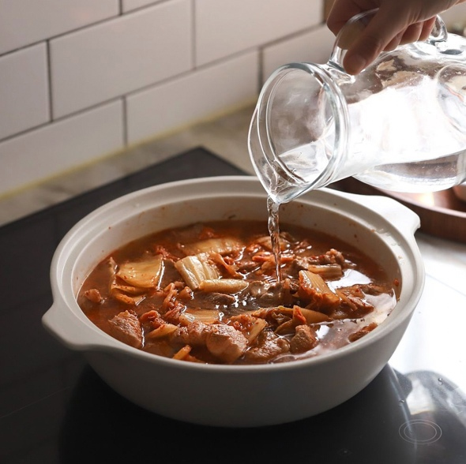

Kimchi jjigae (김치찌개) also known as kimchi stew or kimchi soup is probably the most common way of consuming some aged kimchi.
It is one of the most popular dishes in Korean national cuisine. This soup is loved by many due to its excellent taste, health benefits and low calorie content.
Kimchi jjigae is rich in calcium, iron, minerals, phosphorus, a variety of vitamins, and also contains a lot of fiber, so it has a high nutritional value.
Kimchi is the main ingredient. The presence of other components may vary depending on the individual preferences of the person. As a rule, the composition also includes beef, pork, chicken or seafood, tofu, chopped green onions, garlic.
The basis of the soup can be either anchovy broth, or just vegetable broth, as well as ordinary drinking water (as a quick version of the dish).
Total Time
Prep Time
Cook Time
1 hr 25 min
25 minutes
1 hour
INGREDIENTS
AMOUNT
MEAT
Skinless pork belly
180g
Ground black pepper
3 sprinkles
KIMCHI & OTHERS
Aged kimchi
200g
Onion
30g
Green onion
5g
Shiitake mushrooms
2 small
Firm tofu
150g
Water
250ml
JJIGAE BASE
Korean chili flakes (gochugaru)
1 Tbsp
Soy sauce
1 Tbsp
Korean chili paste (gochujang)
1 tsp
Minced garlic
1/4 tsp
Ground black pepper
3 sprinkles
Sugar
1 tsp
NUTRITION
PREPARATION
CUT THE PORK BELLY INTO BITE SIZE PIECES AND MARINATE WITH THE GROUND BLACK PEPPER FOR ABOUT 15 MINS.
CUT THE KIMCHI INTO BITE SIZE PIECES.
THINLY SLICE AN ONION.
SLICE THE TOFU INTO 1 CM THICKNESS RECTANGLES.
THINLY SLICE A GREEN ONION.
MIX ALL INGREDIENT FOR THE JJIGAE BASE IN A BOWL.
REMOVE THE STEMS FROM SHIITAKE MUSHROOMS AND SLICE THINLY.
HOW TO MAKE KIMCHI JJIGAE (KIMCHI STEW)
Cook kimchi with the pork in a pot until soft over medium heat (about 10 min).
Add the onion, mushrooms and the base sauce to the pot and stir for 3 minutes
Add water and bring the pot to a boil over medium high heat initially then reduce the heat to medium once it starts boiling.

Cook further until the meat is cooked (It takes 10 to 15 mins).
Add tofu and green onion into the pot, cover and cook another 10 to 15 minutes.
Serve with rice (and other side dishes).
Notes
Use old, sour kimchi.
Cook the kimchi and pork together before adding the liquid. This step develops extra flavor.
Use the water used to rinse rice (ssalddeumul, 쌀뜨물) as the stew base. It's commonly used for Korean stews.
Use the water from the second or third round of rinsing. The rice water thickens the broth slightly and enhances the flavor.
Anchovy broth, chicken broth, milky bone broth or vegetable broth will also be great as a soup base.
Use the juice from the kimchi if available. It will add lots of flavor to the broth.
You could drizzle sesame oil over top to add an extra savory flavour.
OUR RECIPES
KIMCHI FRIED RICE
JAJANGMYEON
JJAMPPONG
BIBIMBAP
TTEOKBOKKI
GIMBAP
REVIEWS:
KorFan
Posted March 14th, 2023 at 4:02 am
★★★★★
Made this for the first time today. I used anchovy broth instead of water and it came out so good.
I will definitely make this again. Thank you for sharing your recipe!
Mr. Nobody
Posted February 16th, 2023 at 5:17 pm
★★★★★
I love this recipe!!! It is perfectly spicy, with great textures and is warm and comforting. Absolutely delicious.
This is my second Korean recipe I have tried, Bibimbap being the first. Both from your site! Korean food is my favorite.
Thank you for what you do!
Website is not using any marketing, analytics or advertising cookies. No cookies are shared by third parties.
Website uses only 2 cookies – one for the login purposes, this cookie is deleted once you close your browser.
Second cookie increases the security of your login – Website uses it to identify logins from unknown devices.